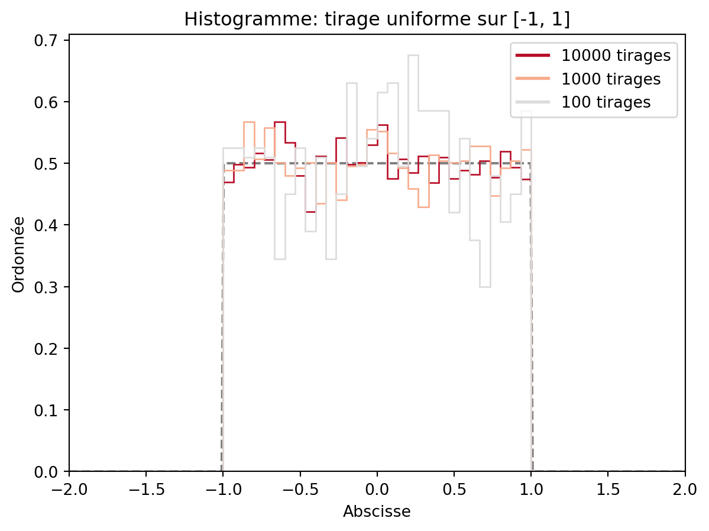
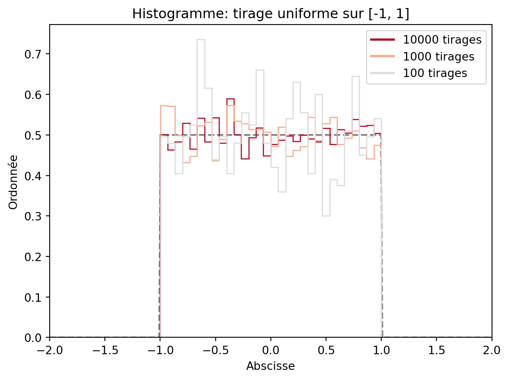
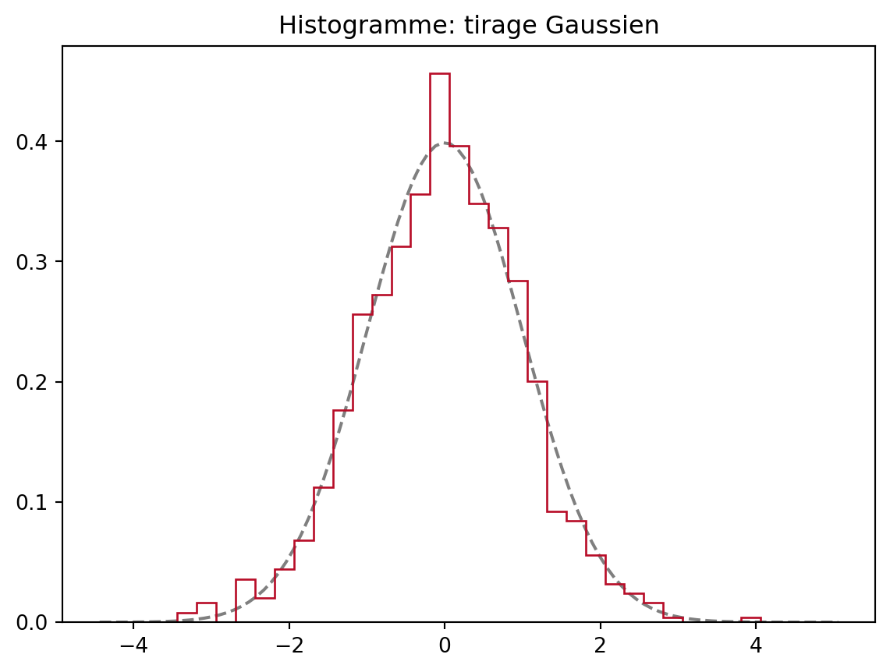
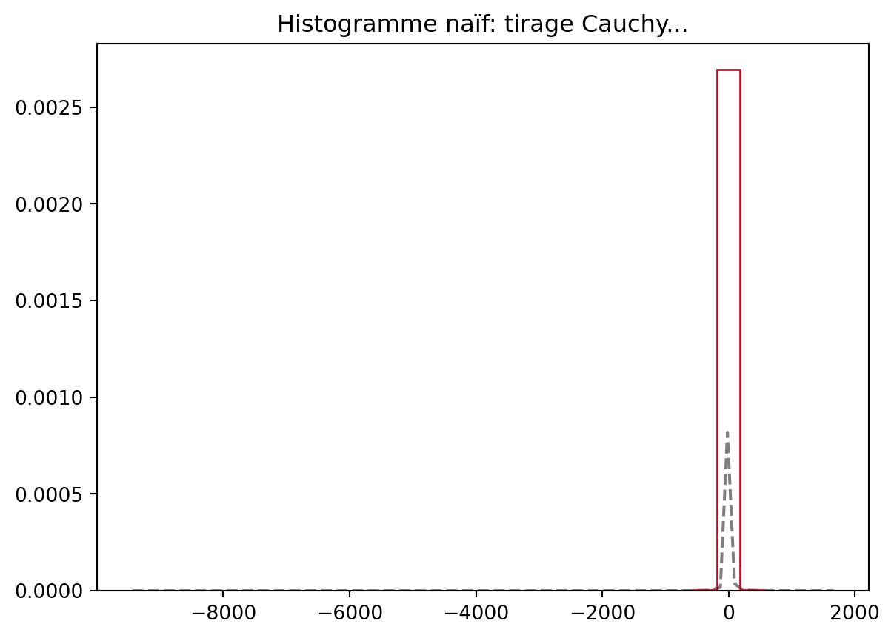
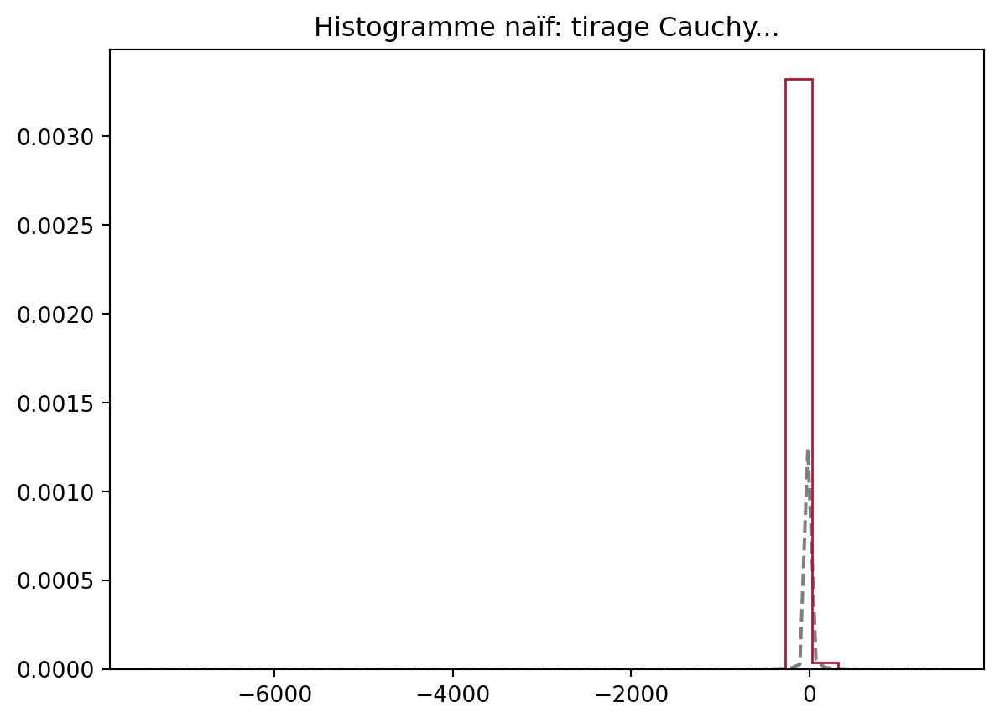

import numpy as np
np.random.uniform(size=4)array([0.5008597 , 0.43633034, 0.94280279, 0.17753803])numpy, savoir afficher un histogramme, une densité, etc.numpy.Avec numpy, la fonction numpy.random.uniform permet la génération de réalisations pseudo-aléatoires de la loi uniforme sur [0,1].
On peut modifier la taille de l’échantillon généré en modifiant l’argument de la fonction. Pour obtenir n=4 réalisations i.i.d. de loi uniforme, essayez par exemple
import numpy as np
np.random.uniform(size=4)array([0.5008597 , 0.43633034, 0.94280279, 0.17753803])Pour rappel, l’algorithme de génération de v.a. est récursif et s’appuie sur une graine. La graine peut être modifiée avec la création d’un générateur, et il suffit d’entrer un nombre en argument pour fixer cette graine.
rng = np.random.default_rng(seed=34)
print(rng.uniform())
rng = np.random.default_rng(34)
print(rng.uniform())0.004028243493043537
0.004028243493043537Changer les valeurs de seed et vérifier que les tirages ont bien changé.
Créez un vecteur de taille 1000 composé de réalisations i.i.d. de v.a.uniformes sur [-1,1]. Dans la suite on supposera que l’on a chargé matplotlib pour l’affichage graphique avec la commande:
import matplotlib.pylab as plt
from scipy import statsÀ l’aide de la fonction plt.hist, représentez l’histogramme de cet échantillon:
fig, ax = plt.subplots()
vect = rng.uniform(-1, 1, 1000)
ax.hist(vect, label="Histogramme")
plt.legend()
plt.show()
On utilisera l’aide de hist de matplotlibs pour préciser les options graphiques suivantes:
bins en entrant l’option bins=30 et bins=10.density=True, de sorte que l’aire soit de 1 (on représente donc une densité qui est constante par morceaux)plt.title (avec une chaîne de caractères entre guillemets). On peut également ajouter un nom aux axes avec l’option plt.xlabel et plt.ylabel.ax.set_xlim et ax.set_ylim permettent de préciser l’échelle de axes: il faut préciser un tuple (a,b) où a<b sont les deux bornes choisies pour votre axe.fill et histtype de hist pour obtenir le résultat suivant, en affichant sur un même graphique trois tirages, de tailles 1000, 5000 et 10000.pdf du module scipy.stats. Créer un vecteur équiréparti sur [-2, 2] de longueur 300 évaluer la fonction sur la même figure: on souhaite superposer cette densité à l’histogramme. On utilisera la fonction plot pour tracer la densité, et on pourra utiliser l’option alpha pour rendre la densité plus transparente.Un exemple de figure de qualité acceptable est par exemple celle qui suit:

Attention quand vous tracez des histogrammes pour des réalisation de la v.a. non bornées: pour la gaussienne, les histogrammes sont bons
vectGauss = np.random.randn(1000)
fig, ax = plt.subplots()
xx = np.linspace(vectGauss.min() - 1, vectGauss.max() + 1, 100)
ax.plot(xx, stats.norm.pdf(xx, loc=0, scale=1),'--', color='k', label="Loi théorique", alpha=0.5)
ax.hist(vectGauss, histtype='step', density=True, bins=30, label="Histogramme 10000", fill=False, color=colors[0])
# plot density
plt.title('Histogramme: tirage Gaussien')
plt.show()
Pour la Cauchy, les histogrammes se comportent mal
vectCauchy = np.random.standard_cauchy(10000)
fig, ax = plt.subplots()
xx = np.linspace(vectCauchy.min() - 1, vectCauchy.max() + 1, 100)
ax.plot(xx, stats.cauchy.pdf(xx, loc=0, scale=1),'--', color='k', label="Loi théorique", alpha=0.5)
ax.hist(vectCauchy, histtype='step', density=True, bins=30, label="Histogramme 10000", fill=False, color=colors[0])
plt.title('Histogramme naïf: tirage Cauchy...')
plt.show()
# plot density
Il faut tronquer pour retrouver une représentation fidèle:
xmax = 11
fig, ax = plt.subplots()
xx = np.linspace(-xmax - 1, xmax + 1, 100)
ax.plot(xx, stats.cauchy.pdf(xx, loc=0, scale=1),'--', color='k', label="Loi théorique", alpha=0.5)
ax.hist(vectCauchy[np.abs(vectCauchy) < xmax], histtype='step', density=True, bins=30, label="Histogramme 10000", fill=False, color=colors[0])
# plot density
ax.set_xlim((-xmax - 1, xmax + 1))
plt.title('Histogramme : tirage Cauchy tronquée...')
plt.show()
La fonction de répartition de la loi uniforme est obtenue via la commande cdf du module scipy.stats.uniform. À l’aide de la commande plt.plot tracez en bleu la fonction de répartition de la loi uniforme sur [-1,1], [-0.7, 0.7] et [-0.5,0.5] et donnez un titre à votre graphique.
lw (linewidth) l’épaisseur du trait.matplotlib. Une liste exhaustive est donnée ici: matplotlib.pyplot.plot.htmlcolor=nom_couleur dans la fonction plot.Manipulez les différentes options pour vous familiariser avec les graphes

² :::{.callout-note}
Tenter de reproduire la figure suivante

:::
Créez un vecteur de taille 100 composé de réalisations i.i.d. de variables uniformes sur [0,1]. Calculez dans un vecteur la moyenne cumulée des valeurs générées. Représenter graphiquement l’évolution de ces moyennes. Vers quoi semble converger la moyenne quand la taille de l’échantillon augmente ?
Pour ajouter une droite à un graphe, on utilise la commande ax.axhline. Ajoutez en rouge la droite d’équation y=1/2 sur le graphe précédent. Refaites cet exercice avec un échantillon de taille n=1000 pour observer plus finement la convergence.

dzexpo qui prend en argument une taille d’échantillon n et un paramètre \lambda > 0 et qui donne en sortie un échantillon de taille n de loi \mathcal{E}(\lambda). On utilisera la méthode d’inversion vue en cours et seulement des tirages uniformes sur [0,1]. Attention, le mot clef lambda est un mot réservé en Python.cumulative de hist) d’un tel échantillon pour n=10^2, n=10^3, puis n=10^4, et pour \lambda = 1, puis \lambda = 4. Superposez à chaque fois le graphe de la densité de \mathcal{E}(\lambda).


On reprend le tout avec la loi de Cauchy:

Le phénomène qui apparaît avec la loi de Cauchy est les suivant: les queues de la loi de Cauchy sont tellement épaisses que la moyenne empirique que l’écart entre \min_i(X_i) et le \max_i(X_i) (les X_i étant les tirages effectués) est du même ordre de grandeur que le nombre de tirages, n. Comme la fonction hist discrétise l’intervalle [\min(X_i), \max(X_i)] en le nombre de boîtes (bins) on observe peu de points dans chaque boîte ce qui rend l’estimation de la densité trop petite.
Ce point n’est pas un problème pour les lois gaussiennes, car la largeur de l’intervalle [\min(X_i), \max(X_i)] est de l’ordre de \sqrt{\log(n)}, et comme on a n points à placer dans cet intervalle, il y a assez de points dans chaque boîte pour obtenir une bonne estimation.
Notons que les méthodes à noyaux (KDE) ne souffrent pas de ce défaut, car les “boîtes” sont en fait fixé autour des données et non sur une grille discrétisée comme c’est le cas pour l’histogramme. Voir par exemple l’aide de scikit learn ou encore wikipedia, méthode à noyau.
import plotly.graph_objects as go
from sklearn.neighbors import KernelDensity
n_sample = 1000
x = np.linspace(-2, 10, num=10000)
X=dzcauchy(n_sample, 1)
kde = KernelDensity(kernel="tophat", bandwidth=0.1).fit(X.reshape(-1, 1))
log_dens = kde.score_samples(x.reshape(-1, 1))
fig=go.Figure()
fig.add_trace(go.Scatter(x=x, y=np.exp(log_dens), mode='lines', line=dict(color='blue', width=2), name="Estimation de la densité"))
fig.add_trace(go.Scatter(x=x, y=stats.cauchy.pdf(x, scale=1, loc=0), mode='lines', opacity=0.6, line=dict(color='black', width=2), name="Densité de Cauchy"))
fig.update_layout(
template="simple_white",
showlegend=True,
)
print(f"Taille de l'échantillon: {n_sample}")
print(f"Étendue: {np.max(X)-np.min(X)}")Taille de l'échantillon: 1000
Étendue: 821.8956937401883Notons qu’un phénomène similaire apparaît aussi avec la loi de Pareto, qui est une loi à queue lourde quand son paramètre \alpha est plus petit que 1.
Taille de l'échantillon: 1000
Étendue: 6767.926681527171
Taille de l'échantillon: 1000
Étendue: 120.26958531004222